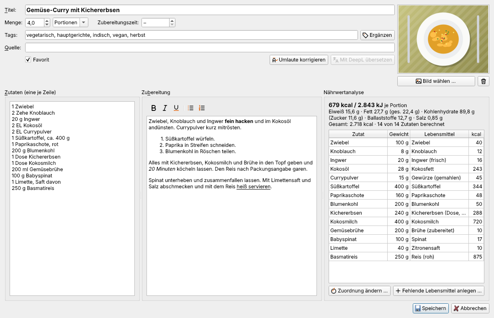
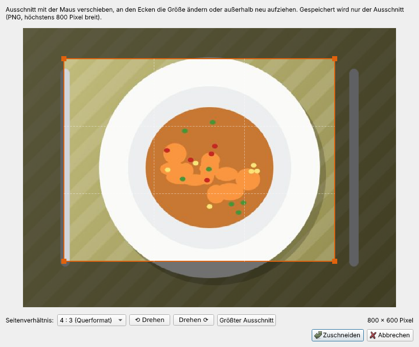
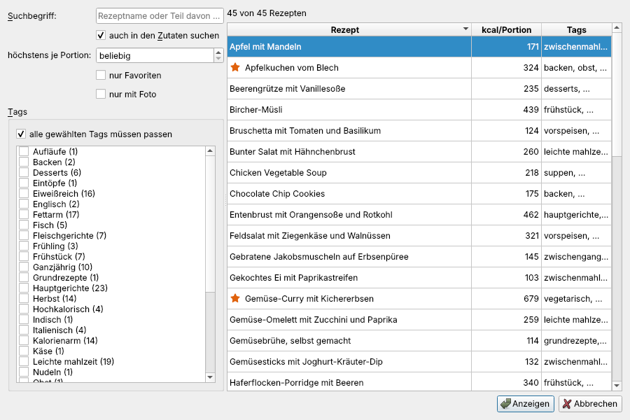

Rezepte anlegen und bearbeiten
Der Rezepteditor
Datei → Neues Rezept … (Strg+N) öffnet einen leeren Editor, Datei → Rezept bearbeiten … (Strg+E) oder ein Doppelklick in der Rezeptliste öffnet das ausgewählte Rezept.

| Feld | Bedeutung |
|---|---|
| Titel | Name des Rezepts (Pflichtfeld) |
| Menge | Anzahl und Einheit: Portionen, Stück, Kuchen, Gläser … – Grundlage für die Werte „je Portion“ |
| Zubereitungszeit | in Minuten (optional) |
| Tags | Stichwörter, durch Komma getrennt, z. B. „vegetarisch, suppen, schnell“ |
| Quelle | woher das Rezept stammt – Buch, Website, Person |
| Favorit | markiert das Rezept; Favoriten lassen sich gezielt anzeigen und bevorzugen |
| Bild | Rezeptfoto (siehe Rezeptbild zuschneiden) |
| Zutaten | eine Zutat je Zeile (siehe Zutaten richtig eingeben) |
| Zubereitung | Arbeitsschritte, jeder Absatz mit der Eingabetaste; mit Formatleiste (siehe Zubereitung formatieren) |
Rechts unten zeigt die Nährwertanalyse schon während der Eingabe Energie und Nährwerte je Portion und für jede Zutat das erkannte Lebensmittel mit Gewicht und Kalorien. Mit Speichern wird das Rezept übernommen; Abbrechen verwirft alle Änderungen.
Zubereitung formatieren
Über dem Feld Zubereitung steht eine kleine Formatleiste. Sie wirkt auf den markierten Text – ohne Markierung auf das Wort unter der Schreibmarke bzw. auf das, was Sie als Nächstes schreiben:
| Knopf | Tastenkürzel | Wirkung |
|---|---|---|
| B | Strg+B | fett |
| I | Strg+I | kursiv |
| U | Strg+U | unterstrichen |
| Aufzählung | Strg+Umschalt+8 | markierte Absätze als Aufzählung mit Punkten |
| Nummerierte Liste | Strg+Umschalt+7 | markierte Absätze als nummerierte Schritte 1., 2., 3. … |
Ein zweiter Klick auf denselben Listenknopf hebt die Liste wieder auf; der andere Listenknopf wandelt sie um. Die Formatierung erscheint in der Rezeptansicht, im Ausdruck, auf der exportierten Website sowie im LaTeX- und Writer-Export. Aus dem Browser oder einer Textverarbeitung eingefügter Text behält nur diese Formate – Schriftarten, Farben, Bilder und Links fallen weg.
Hinweis: Gespeichert wird die Zubereitung weiterhin als einfacher Text mit wenigen Zeichen:
**fett**,*kursiv*,__unterstrichen__, Zeilen mit-für Aufzählungen und1.für nummerierte Schritte. Deshalb funktionieren Übersetzung, Umlautkorrektur, Suche und Abgleich wie bisher, und ältere Rezepte bleiben unverändert. Importierte Rezepte, deren Schritte mit „1.“, „2.“ … beginnen, erscheinen automatisch als nummerierte Liste.
Zutaten richtig eingeben
Jede Zeile enthält Menge, Einheit und Zutat, wahlweise mit einem Zusatz nach einem Komma:
500 g Mehl
2 EL Olivenöl
1 Prise Salz
3 Eier
1/2 TL Zimt
1 Zwiebel, fein gehackt
1 Süßkartoffel (ca. 400 g)
Salz und Pfeffer
== Für die Soße ==
200 ml Sahne- Mengen dürfen Brüche („1/2“, „½“), Dezimalzahlen („0,5“) und Bereiche („2-3“) sein.
- Einheiten: g, kg, ml, l, EL, TL, Prise, Msp., Pck., Becher, Dose, Glas, Bund, Zehe, Scheibe, Stück, Tasse und viele mehr – auch englische (cup, tbsp, oz …), die ViviaMeals umrechnet.
- Ohne Einheit zählt ViviaMeals Stück und rechnet mit einem durchschnittlichen Stückgewicht (1 Ei ≈ 58 g, 1 Zwiebel ≈ 100 g). Eine Angabe in Klammern wie „(ca. 400 g)“ hat Vorrang.
- Zwischenüberschriften schreiben Sie als
== Für den Teig ==. Sie erscheinen in der Ansicht und im Ausdruck als Abschnitt. - Zutaten ohne Menge („Salz und Pfeffer“) werden angezeigt, zählen für die Nährwerte aber nicht.
Nährwerte im Editor
Erkennt ViviaMeals eine Zutat nicht oder ordnet sie falsch zu, klicken Sie in der Nährwertanalyse doppelt auf die Zeile (oder Zuordnung ändern …). Wählen Sie das passende Lebensmittel und kreuzen Sie bei Bedarf an, dass diese Zutat künftig in allen Rezepten so zugeordnet werden soll.
Gibt es für eine Zutat überhaupt kein passendes Lebensmittel – etwa bei einem Fertigprodukt –, legt Fehlende Lebensmittel anlegen … es mit den Angaben von der Verpackung an (Eigene Lebensmittel anlegen).
Kann eine Menge nicht in Gramm umgerechnet werden („1 Stück Kürbis“), weist die Analyse darauf hin. Am einfachsten ergänzen Sie dann das Gewicht in Klammern: „1 Stück Kürbis (800 g)“.
Tags
Tags ordnen Rezepte nach Themen. Sie erscheinen in der Themenauswahl des Hauptfensters, in der Suche, auf der exportierten Website und im Menüassistenten.
Ergänzen neben dem Tag-Feld schlägt Tags aus Titel, Zutaten und Nährwerten vor:
- Ernährung: vegan, vegetarisch, fleischgerichte, fisch
- Mahlzeit: frühstück, hauptgerichte, leichte mahlzeit, zwischenmahlzeit, desserts, süßspeise, backen
- Nährwerte: eiweißreich, fettarm, kalorienarm, hochkalorisch, vitaminreich, reduktionsdiät (die Regeln stehen unter Nährwert-Tags)
- Saison: frühling, sommer, herbst, winter, ganzjährig (siehe Saison-Tags)
Vorhandene Tags werden nur ergänzt, nie entfernt. Ein unpassender Vorschlag lässt sich im Feld einfach löschen. Für den Wochenplan und den Menüassistenten sind besonders hilfreich: frühstück, leichte mahlzeit, vorspeisen, suppen, zwischengang, hauptgerichte und desserts.
Rezeptbild zuschneiden
Bild wählen … öffnet ein Foto von der Festplatte (PNG, JPEG, WebP, BMP, GIF). Danach erscheint der Zuschnitt:

- Rahmen verschieben, an den Ecken die Größe ändern oder außerhalb einen neuen Rahmen aufziehen.
- Seitenverhältnis 4 : 3, 3 : 2, 16 : 9, 1 : 1, 3 : 4 oder frei.
- In 90°-Schritten drehen; Größter Ausschnitt setzt den Rahmen zurück.
Gespeichert wird nur der Ausschnitt (höchstens 800 Pixel breit) im Rezept. Das Originalfoto bleibt unverändert auf der Festplatte. Das Papierkorb-Symbol entfernt das Bild aus dem Rezept.
Quelle und Standard-Quelle
Unter Extras → Einstellungen → Allgemein → Standard-Quelle können Sie einen Text hinterlegen, z. B. Ihren Namen. Hat ein Rezept noch keine Quelle – ein neues, gescanntes oder importiertes Rezept ohne Quellenangabe –, steht dieser Text im Feld Quelle und wird beim Speichern übernommen. Sie können ihn im Editor überschreiben oder löschen. Rezepte mit eigener Quelle bleiben unverändert.
Umlaute und Übersetzung im Editor
- Umlaute korrigieren macht aus „Kaese“, „Gemuesebruehe“ und „heiss“ die richtigen Wörter „Käse“, „Gemüsebrühe“ und „heiß“ (siehe Umlaut-Korrektur).
- Mit DeepL übersetzen übersetzt ein fremdsprachiges Rezept ins Deutsche, wenn die DeepL-Übersetzung eingerichtet ist (siehe Übersetzen mit DeepL).
Beide Änderungen erscheinen sofort in den Feldern und werden erst mit Speichern übernommen.
Suchen
Datei → Suchen … (Strg+F) bietet mehr als das Filterfeld:

- Suchbegriff: Rezeptname oder Teil davon, wahlweise auch in den Zutaten.
- Tags: mehrere anklicken; „alle gewählten Tags müssen passen“ verknüpft sie mit UND, sonst mit ODER.
- höchstens … kcal je Portion, nur Favoriten, nur mit Foto.
Die Trefferliste zeigt Titel, Tags und kcal je Portion. Anzeigen (oder Doppelklick) springt zum Rezept im Hauptfenster.
Drucken, Speichern, Löschen
- Datei → Drucken … (Strg+P) druckt das angezeigte Rezept – mit der gerade eingestellten Portionenzahl.
- Datei → Export → Als ViviaMeals-Rezept (.vmr) speichern … speichert ein einzelnes Rezept als Datei,
- B. zum Verschicken per E-Mail. Der Empfänger öffnet sie per Doppelklick in ViviaMeals.
- Datei → Rezept löschen … (Entf in der Liste) löscht das Rezept nach einer Rückfrage.
- Planen → Zufälliges Rezept (Strg+R) zeigt ein beliebiges Rezept der Datenbank – für Unentschlossene.